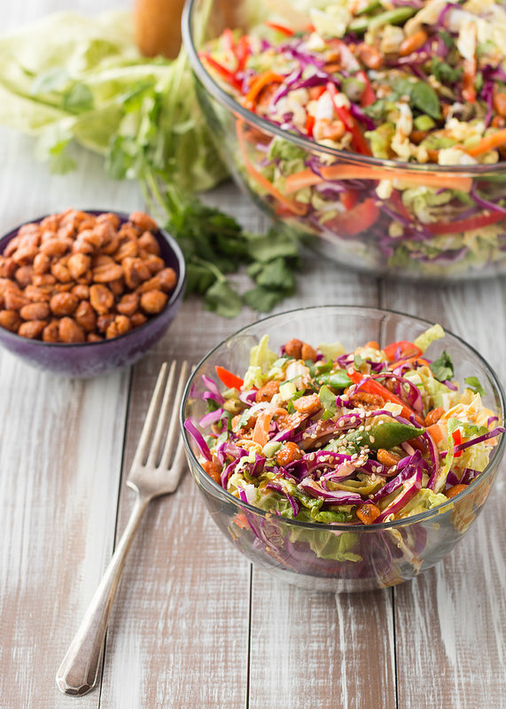

Asian Salad With Salted Peanuts

Description
Asian Salad combines the freshest vegetables to create a tasty and healthy meal. It contains raw vegetables such as cabbage, carrots, bell pepper, onions etc. mixed in a fine dressing. Add some salty peanuts on top of this one and you’re done. A quick and easy asian salad recipe!
Ingredients for the Asian Salad recipe to serve 4 people
- 1/2 chinese cabbage
- 1 carrot
- 1 bell pepper
- 1 red onion
- 2 tomatoes
- 1/2 cucumber
- 2 spring onions
- 3 tbsp salted peanuts
Dressings
- 1 tbsp oystersauce
- 1 tsp soy sauce
- 1 tbsp honey
- 1 tsp sesame seeds
- 1 tbsp sesame oil
- 1 tbsp vinegar
- 2 inches ginger
Steps
- Slice the cabbage, carrot, bell pepper, onion and cucumber in thin slices and cut the tomatoes in small cubes.
- The spring onion are cut into 1 inch pieces.
- Chop the peanuts.
Dressing
Mix well together and pour over the vegetables in a big bowl. Use the salted peanuts as topping